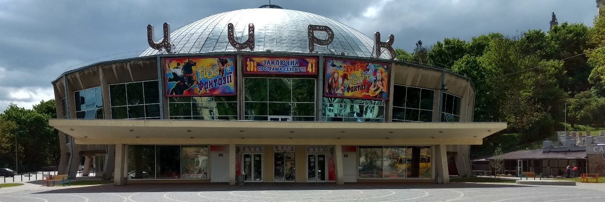
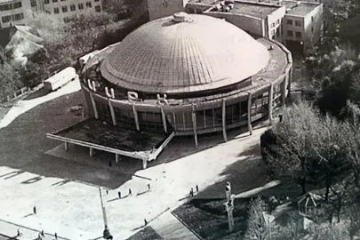
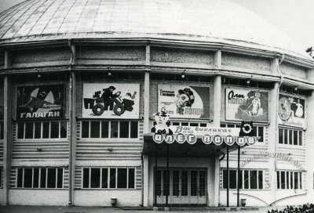
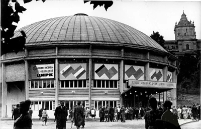
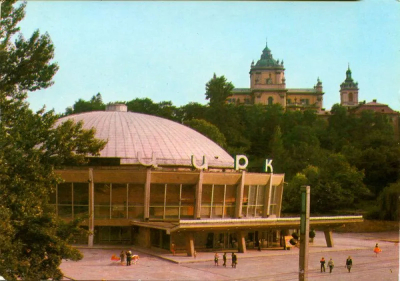

Гарний клоун смішить мовчки
Ернст Хемінгуей
Львівський державний цирк
Історія
Від одного з найулюбленіших місць жителів Львова тягнуться історичні корені у минуле століття, а саме Львівського державного цирку. Так за планом відомих архітекторів Адольфа Бахматова та Михайла Каневського звели у 1969 році незвичайну будову, якій судилося стати оселею циркового мистецтва. Вона розташувалася на підніжжі Святоюрської гори. Василь Каменщик займався благоустроєм та інтер’єрами.
Зовні цирк у Львові нагадує приплющену тарілку, але варто відвідувачам увійти всередину — перед ними відкривається зовсім інший вигляд. Просторий хол в поєднанні з величезними вікнами створюють враження, що цирк є зосередженням тепла й світла міста. Ніби на підтвердження цього, в самому центрі зали розташувалася барвиста арена жовтого кольору, яка зверху нагадує сяюче сонце.
 Цирк являє собою купольну циліндричну споруду з розташованими периметрально приміщеннями для акторських вбиралень та рекреації. Особливо виділяється простора вхідна частина – вестибюль та прекрасно облаштований глядацький зал – арена з куполом, оточена амфітеатром місць для глядачів.
Її площа становила понад 100 квадратних метрів. У приміщенні цирку налічується 1 745 глядацьких місць.
За всю історію арена Львівського цирку приймала гостей із США, Німеччини, Киргизстану, Італії, Молдови, Казахстану та безліч інших країн.
Потрапити в Львівський державний цирк — значить завітати в гості до казки. Зробити це дуже просто — потрібно просто забронювати чи купити квитки.
 Програми
Кожна з програм Львівського цирку триває понад місяць. Станом на 2023 попри повномасштабне вторгнення діяла програма «Цирк на воді - Waterland» з 11 лютого 2023 до 19 березня 2023 року, в рамках світового турне «Таємниці Атлантиди».
І звісно, чекатимемо на актуальні програми, які відбуватимуться в цирку, а саме:
- «Новорічне королівство»
- «Цирк карнавал чудес»
- «Цирк-шоу Експресія»
- «Країна амазонок»
- «Цирк на льоду»